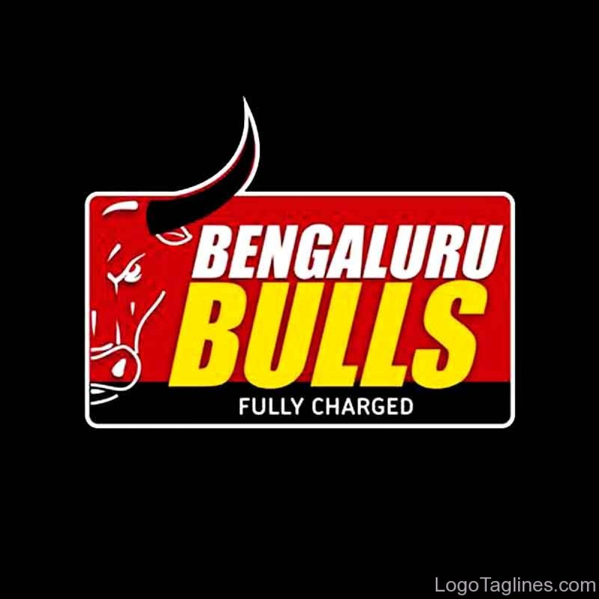
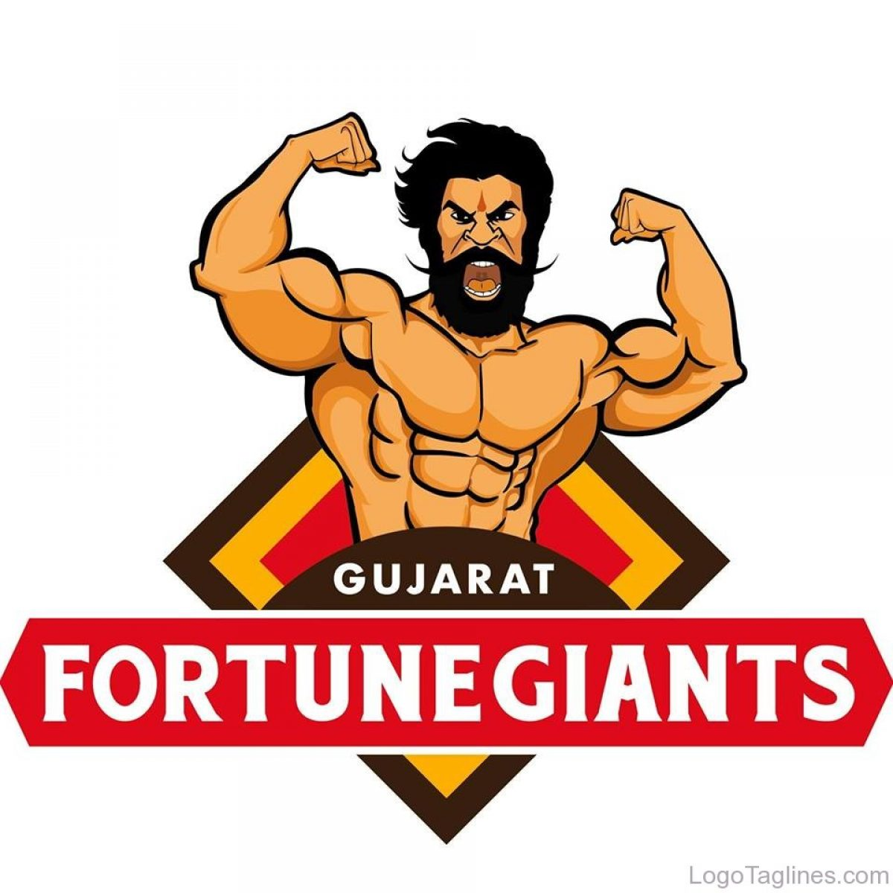
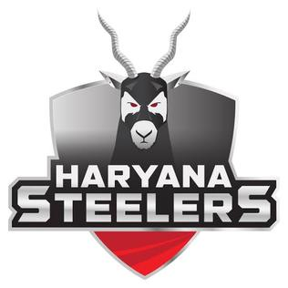
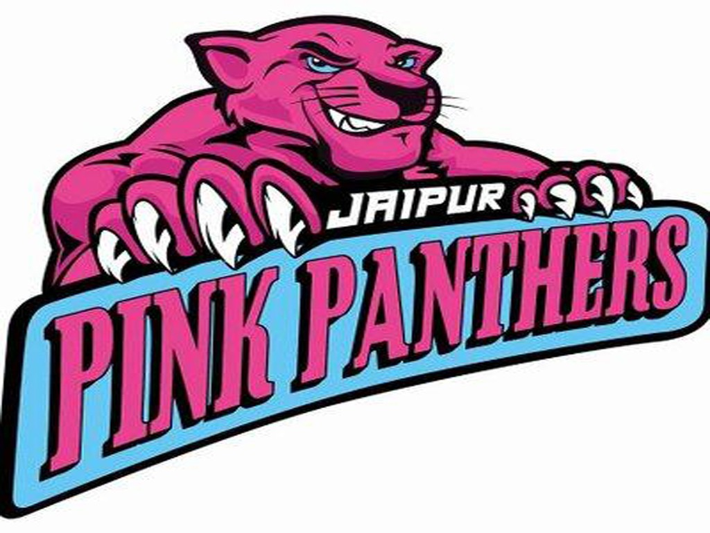
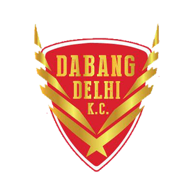
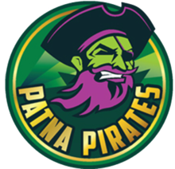
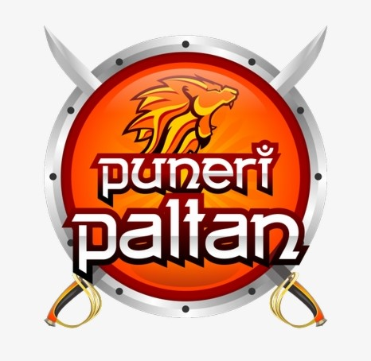
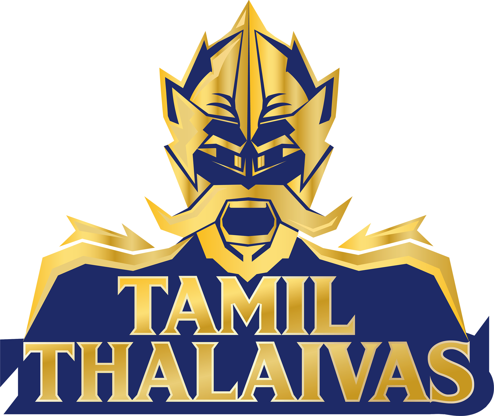
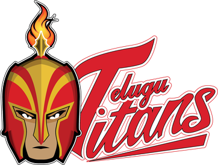
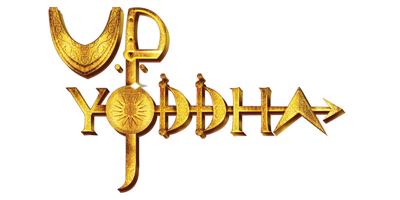

- First League : 2014
- Tournament : Double Round-Robin and Playoffs
- Number of Teams : 12
- Current Champions : Bengal Warriors
- Most Successful : Patna Pirates
- Website : prokabaddi.com
- Total seasons: 7
- Current Sponsor : Vivo
- Prize Money : 3 Crore
- Current Broadcaster : Star Sports
Pro Kabaddi League

The Pro Kabaddi League (PKL), currently known as Vivo Pro Kabaddi League for sponsorship purposes, is a professional-level kabaddi league in India. It was launched in 2014 and is broadcast on Star Sports. The league's inception was influenced by the popularity of the kabaddi tournament at the 2006 Asian Games. The format of the competition was influenced by Indian Premier League. The Pro Kabaddi League uses a franchise-based model and its first season was held in 2014 with eight teams each of which having paid fees of up to US$250,000 to join. There were doubts over whether the PKL would be successful, noting that there were many leagues attempting to emulate the IPL's business model and success, and that unlike cricket, there were relatively fewer well-known players in Kabaddi. However, it was also noted that kabaddi was widely played in grassroots community settings, and could thus attract a wide variety of rural and metropolitan viewers for advertisers to target if the league gained significant traction.For the 2017 and 2018-19 season, the PKL added four new teams, and changed its format to split the teams into two divisions known as "zones". Soon the league returned to its regular double round-robin format for the 2019 season.The inaugural season was seen by 435 million viewers, second to the 2014 Indian Premier League's 552 million, while the first season final between Jaipur Pink Panthers and U-Mumba was watched by 86.4 million. Star Sports, the PKL's broadcaster, subsequently announced in 2015 that it would acquire a 74% stake in the league's parent company Mashal Sports.For the 2017 and 2018-19 season, the PKL added four new teams, and changed its format to split the teams into two divisions known as "zones". Soon the league returned to its regular double round-robin format for the 2019 season.As per the available data of the opening two weeks, Star Sports Pro Kabaddi viewership on TV increased by nearly 56% from the 2014 year's viewership. During the inaugural season, viewership was 43.5 crore (435 million) viewers, which was the second in India after the 56 crore (560 million) of IPL viewership. The online viewership also increased 1.3 crore unique visitors, which is 18.5 times than of last year's 7 lakh unique visitors. The third season which was flagged off on 30 January, recorded a surge in viewership with the opening week ratings 36 percent higher than the week one viewership for its last season.
PKL Teams
Bengal Warriors

Bengaluru Bulls

Gujarat Fortune Giants

Haryana Steelers

Jaipur Pink Panthers

Dabang Delhi

Patna Pirates

Puneri Paltan

Tamil Thalaivas

Telugu Titans

U Mumba

UP Yoddha
PKL Facts
Patna pirates are the most successful team with three titles.